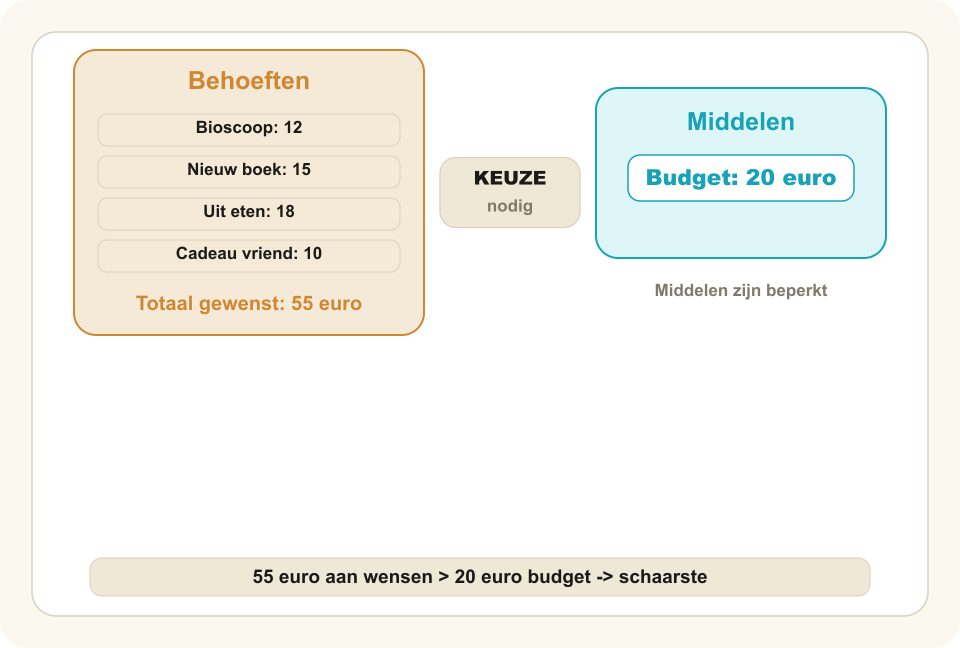
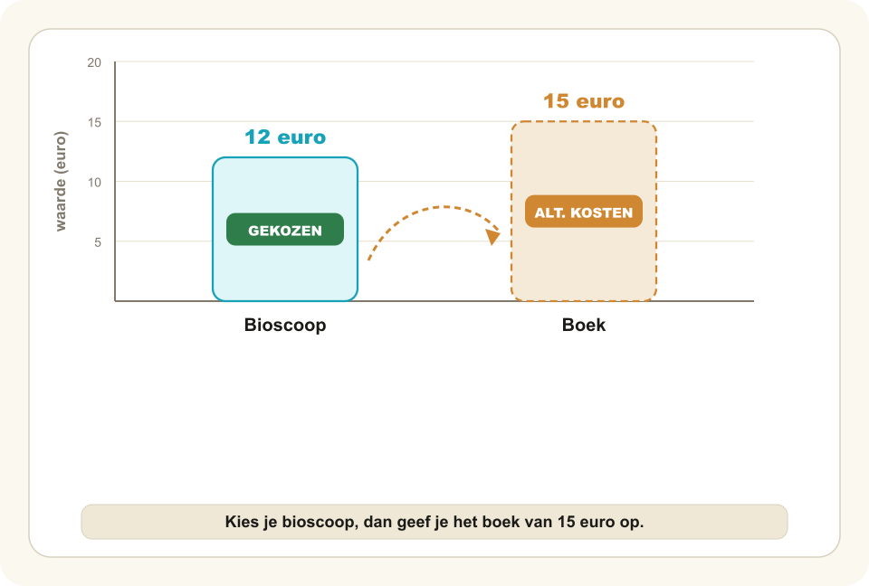
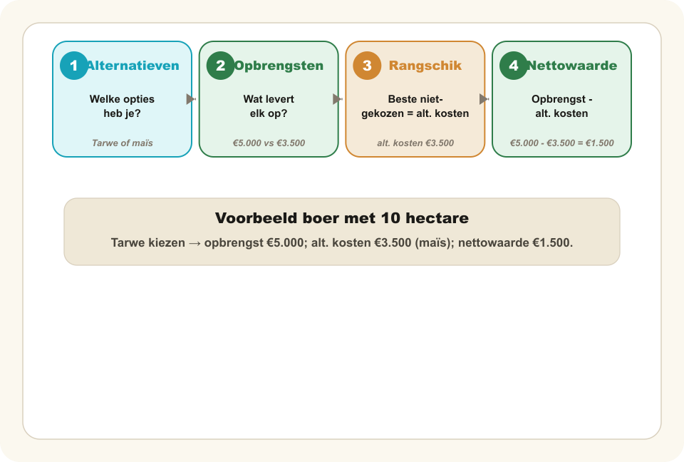
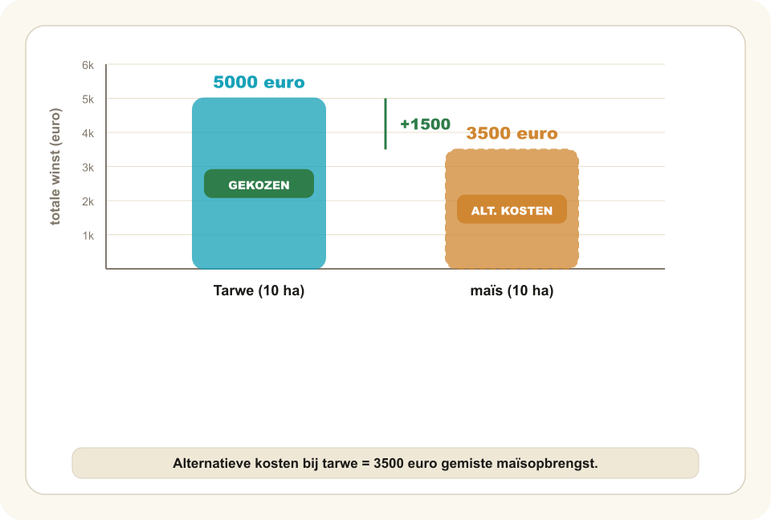

Schaarste en economisch denken — Presentatie
9 dia's · les-presentatie met sprekersnotities
Schaarste en economisch denken
§ 1.1.1
Waarom kun je niet alles hebben?
Boek 1 · Hoofdstuk 1.1 Economisch denken en rekenen
Docententoelichting (Vraag · Uitleg · Pitfall · Overgang)
- Vraag
Waarom kun je niet alles hebben? Laat de klas één antwoord roepen.
- Uitleg
Zeg dat deze paragraaf precies om die vraag draait. Nog niks uitleggen — alleen nieuwsgierigheid oprekken.
- Pitfall
—
- Overgang
Naar Lisa met haar zakgeld.
NARRATIEF VERHAAL
Lisa heeft €20
Zaterdagmiddag. Twee verleidingen.
OPTIE A
OPTIE B
Bioscoop
Nieuw boek
€12
€15
Een middag kijkplezier.
Avonden leesplezier.
Beide samen kost €27. Lisa heeft maar €20 → ze móét kiezen.
Docententoelichting (Vraag · Uitleg · Pitfall · Overgang)
- Vraag
Welke zou jij kiezen, bioscoop of boek? Hand omhoog.
- Uitleg
Beide opties samen kosten €27, Lisa heeft €20. Kiezen is dus verplicht. Wat kost die keuze haar eigenlijk?
- Pitfall
—
- Overgang
Dit is schaarste — en schaarste geldt niet alleen voor Lisa.
KERNBEGRIP 1
Schaarste
Je behoeften zijn groter dan je middelen — dus móét je kiezen.

Docententoelichting (Vraag · Uitleg · Pitfall · Overgang)
- Vraag
Wat heb jij deze week wel gewild en niet gekregen? Waardoor?
- Uitleg
Schaarste is de verhouding tussen wensen en middelen — niet een kwestie van zeldzaam zijn. Schaarste geldt voor iedereen:
- Scholier — geld (€20) → bioscoop of boek?
- Boer — land (10 hectare) → tarwe of maïs?
- Overheid — budget → wegen of onderwijs?
- Pitfall
Schaarste ≠ weinig of zeldzaam. Water is overal, maar één flesje bij drie dorstige mensen is ook schaarste.
- Overgang
Omdat kiezen móét, heeft elke keuze een prijs — niet in euro's, maar in wat je laat liggen.
KERNBEGRIP 2
Alternatieve kosten
De opbrengst van het beste alternatief dat je laat liggen.

Docententoelichting (Vraag · Uitleg · Pitfall · Overgang)
- Vraag
Lisa kiest de bioscoop. Wat kost haar dat — in euro's, en daarnaast?
- Uitleg
Terug naar Lisa:
- Gekozen — bioscoop (€12), het plezier van de film.
- Niet gekozen — boek (€15), avonden leesplezier.
- Alternatieve kosten — het leesplezier dat ze laat liggen.
Benadruk: niet het geldbedrag, maar wat ze misloopt.
- Pitfall
Alternatieve kosten ≠ de prijs die je betaalt. Dat is de gewone uitgave.
- Overgang
Hoe vind je bij élke keuze systematisch de alternatieve kosten? In vier stappen.
KERNBEGRIP 3
Economisch denken in vier stappen
Benoem alternatieven
Welke opties heb je?
Bereken opbrengsten
Wat levert elk alternatief op?
Rangschik
Beste niet-gekozen = alternatieve kosten.
Bereken nettowaarde
Opbrengst − alternatieve kosten. Figuur 3 · het keuzeproces in vier stappen
Verstandig = opbrengst > alternatieve kosten.

Docententoelichting (Vraag · Uitleg · Pitfall · Overgang)
- Vraag
Als je voor een lastige keuze staat, waarmee begin je?
- Uitleg
Vier stappen, altijd dezelfde volgorde: (1) benoem alternatieven, (2) bereken opbrengst per alternatief, (3) rangschik — beste niet-gekozen = alternatieve kosten, (4) bereken nettowaarde = opbrengst − alternatieve kosten. Dit is het schema dat in elk tentamen en elke opgave terugkomt.
- Pitfall
Stap 4 wordt vaak overgeslagen. Zonder stap 4 weet je wel de alternatieve kosten, maar niet of de keuze achteraf goed uitpakte.
- Overgang
We passen het meteen toe op een boer met 10 hectare.
UITGEWERKT VOORBEELD · STAP 2
Wat levert elk gewas op?
| GEWAS | € / HECTARE | TOTAAL (10 ha) |
|---|---|---|
| Tarwe | €500 | €5.000 |
| Maïs | €350 | €3.500 |

Docententoelichting (Vraag · Uitleg · Pitfall · Overgang)
- Vraag
Een boer heeft 10 hectare. Tarwe levert €500/ha op, maïs €350/ha. Wat verdient hij per gewas?
- Uitleg
Snel voorrekenen: 10 × €500 = €5.000 voor tarwe; 10 × €350 = €3.500 voor maïs. We hebben nu de opbrengst van élke optie — dat was stap 2.
- Pitfall
Niet meteen zeggen welke hij moet kiezen. We berekenen hier alleen.
- Overgang
De getallen staan. Wat geeft hij op als hij tarwe kiest?
UITGEWERKT VOORBEELD · STAP 3
Wat geeft hij op?
Kiest tarwe → alternatieve kosten
€3.500
de maïsopbrengst die hij laat liggen
Docententoelichting (Vraag · Uitleg · Pitfall · Overgang)
- Vraag
Hij kiest tarwe. Wat láát hij dan liggen?
- Uitleg
De maïsopbrengst van €3.500 — dát zijn zijn alternatieve kosten. Niet de som van opties, niet de prijs die hij betaalt: het beste alternatief dat hij niet neemt.
Netto: €5.000 − €3.500 = €1.500 voordeel. Kiezen loont dus — zolang de opbrengst de alternatieve kosten overtreft.
- Pitfall
Alternatieve kosten optellen over alle niet-gekozen opties is fout. Het is altijd het BESTE alternatief.
- Overgang
Even samenvatten: vijf dingen om vast te houden.
Vijf dingen om te onthouden
Schaarste ontstaat wanneer behoeften groter zijn dan middelen — daardoor moet je kiezen.
Elke keuze heeft alternatieve kosten: de opbrengst van het beste alternatief dat je opgeeft.
Economisch denken = vier stappen: (1) alternatieven, (2) opbrengsten, (3) rangschik (= alternatieve kosten), (4) nettowaarde.
Alternatieve kosten ≠ de prijs die je betaalt — het gaat om wat je misloopt.
Schaarste geldt voor iedereen: scholier, boer, overheid.
De kern
Docententoelichting (Vraag · Uitleg · Pitfall · Overgang)
- Vraag
Welke van de vijf punten kun je uit je hoofd aan je buurman uitleggen?
- Uitleg
Retrieval-moment. Twee minuten: leerlingen leggen de vijf punten hardop aan elkaar uit, zonder op de dia te kijken.
- Pitfall
—
- Overgang
Terug naar Lisa — met één vraag die openblijft.
Terug naar Lisa.
TOT SLOT
Ze weet nu dat kiezen altijd iets kost. Maar hóé vergelijk je eigenlijk plezier met plezier — of tarwe met maïs?
VOLGENDE PARAGRAAF · §1.1.2
Hoe meten we verschillen in geld?
Docententoelichting (Vraag · Uitleg · Pitfall · Overgang)
- Vraag
Hoe vergelijk je eigenlijk het plezier van een film met dat van een boek — of tarwe met maïs?
- Uitleg
Bridge-dia. Laat de vraag open. Nog geen inhoud uit §1.1.2 geven — alleen het vervolg aankondigen, zodat leerlingen geactiveerd blijven.
- Pitfall
—
- Overgang
Einde paragraaf 1.1.1. Volgende les: hoe meten we dat in geld?